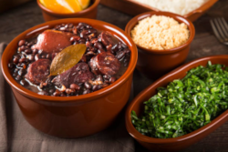
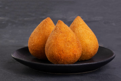
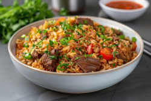
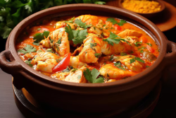
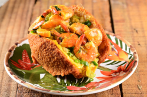

Seja bem-vindo a Gosto Gostoso!
Aqui, celebramos o melhor da culinária brasileira! Nosso site é um espaço feito com carinho para quem ama cozinhar, experimentar novos sabores e relembrar o gostinho da comida caseira.
Seja você um chef experiente ou alguém começando a se aventurar na cozinha, o GostoGostoso traz receitas fáceis de seguir, dicas práticas e tradições que aquecem o coração. Explore pratos típicos de todas as regiões do Brasil, desde o tempero do Nordeste até as delícias do Sul.
Prepare-se para aprender, saborear e compartilhar momentos únicos ao redor da mesa. Vamos cozinhar juntos?
Feijoada
Um clássico da nossa culinária, a feijoada é um prato que possui algumas variações, mas todas bem deliciosas! Esta receita de feijoada que trazemos pra você é bem tradicional, contendo carnes como orelha, rabo e pé de porco. Confira como fazer e capriche no seu almoço!
Coxinha
A coxinha de frango é a mais tradicional, mas existem outras, como a coxinha de mandioca com carne seca. E conta para a gente: você começa a comer pela ponta fina com mais massa ou pela parte mais larga cheia de recheio?.....................................
Arroz carreteiro
Um arroz carreteiro bem feito não tem como desagradar a ninguém! Esse é um prato tradicional do sul do país, mas que já é amado em todas as regiões: confira como fazer arroz carreteiro simples! .....................................................................................
Moqueca de peixe
Essa receita de moqueca de peixe é perfeita para seu almoço de Domingo! Fácil, prática e barata de fazer, você pode utilizar qualquer peixe que quiser nessa receita de moqueca. Faça agora mesmo em sua casa essa receita de moqueca de peixe deliciosa!
Brigadeiro
Ninguém resiste a essa receita de brigadeiro: ele é o rei das festas de aniversário e é impossível comer um só. Essa receita faz parte do dia a dia do brasileiro há décadas. Veja agora mesmo como fazer brigadeiro de forma simples e prática!
Acarajé
O acarajé da Bahia é uma comida tão tradicional que é patrimônio cultural brasileiro. O bolinho de origem africana é feito com uma massa de feijão-fradinho e frito em azeite de dendê. Além de levar camarão, creme vatapá e o cozido de quiabo caruru.